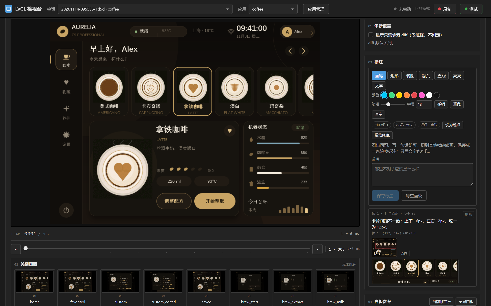
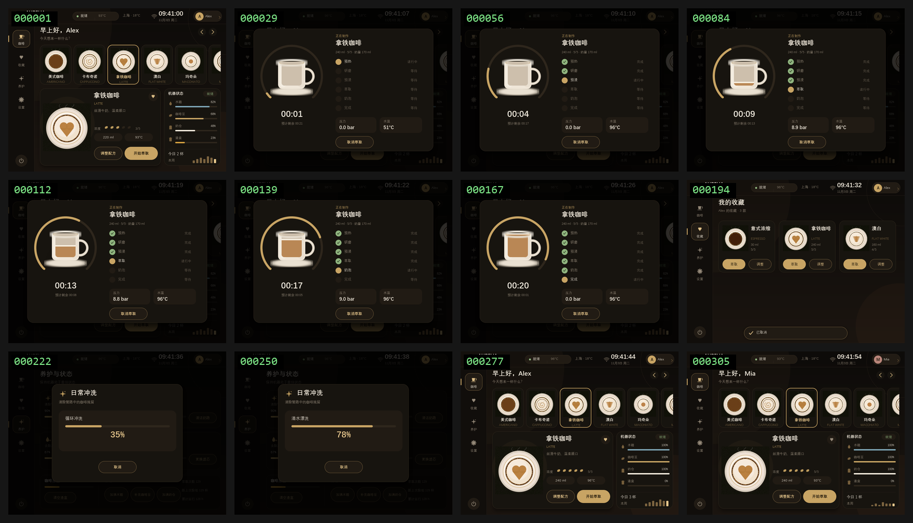
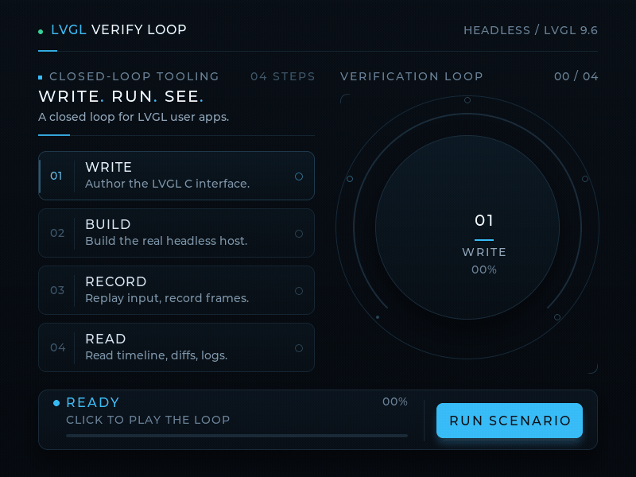
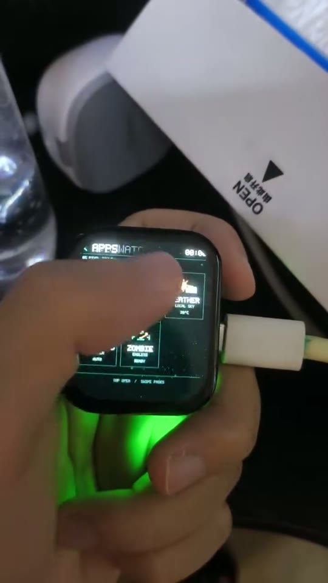
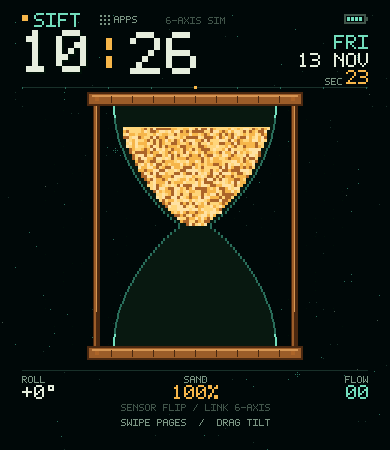

Preview
Starts read-only. The live frame stream is observation only; it is not retained or added to evidence.
AI-first LVGL · Development & verification
A real headless LVGL host with virtual input and virtual time, frame-by-frame session evidence, a web inspector, and an export path to SiFli hardware. The tool provides evidence; humans set the bar.

FRAME 0001 / 0305 800 × 600 · t = 0 msThe verification loop
Modify → build → run → collect evidence → decide → fix. The tool does not hardcode app names, and it does not accept on your behalf.
Humans set the goal and acceptance criteria; no C, no widget list.
# HUMAN INPUT · ILLUSTRATIVE
Goal Coffee ordering screen; show extraction progress
Bar Card spacing consistent; clear input feedback
Feedback Circle it on screen; save as an annotation
Session evidence
A session is not a recording. It is a replayable, citable evidence directory. Only changed frames hit disk; frame numbers stay continuous.
← Scroll horizontally for the full frame sheet →

sessions/20261114-095536-1d9d/ ├── manifest.json status / app / display / frame_count ├── timeline.ndjson input events, frame spans, marks ├── frame_diffs.ndjson changed bboxes per frame ├── frames/ full PNGs, changed frames only ├── snapshots/ named snapshots ├── engine.log exact state printf'd by user C ├── build.log build commands and compiler output ├── annotations.json human annotations (optional) └── whiteboards.json whiteboards (optional)
{"session_id":"20261114-095536-1d9d","session_dir":"sessions/20261114-095536-1d9d","status":"ok","app":"coffee","display":{"width":800,"height":600},"frame_count":305,"error":null}
How AI reads it
summarize_session returns the annotations / whiteboards index and key fields.
Notes, ranges and coordinates first; do not open images yet.
Full frames or crops; each region keeps the raw and annotated crop.
No object tree or property reads. Exact state is printf'd by user C into engine.log and becomes evidence.
status: ok is not acceptance. It only means the session ended normally.
Web inspector
Fixed at 127.0.0.1:8765. Frames come from the real runtime: live during a session, replayed from evidence after it ends.

Live or replay
The web layer only does HTTP / UI adaptation. Replay uses Recording; live uses an independent Runtime. You are looking at frames drawn by LVGL — not a web reimplementation.
Starts read-only. The live frame stream is observation only; it is not retained or added to evidence.
Single frame or time range. Each region stores a bbox, the raw crop and the annotated crop.
frame / range / global scopes. Text or labels are required; images and words reach AI together.
No second protocol client: web, CLI and session_report.py share Runtime / Recording / summarize_session.
Versions & hardware
The same user/app and the same scenario run on six LVGL versions. Device apps target the 9.4 baseline.
One app · six versions
Daily preview and evidence use 9.6. The packaged intro app targets 9.4+ and runs on 9.6.
Cross-version comparison covers event semantics and the session file set, not pixels. --lvgl wins over the scenario's "lvgl" field.
Runs with only GCC: --prebuilt reuses sdk/<version>/; --source forces CMake.

Device clipSiFli SF32LB52x
390×450

sift_watch
Real LVGL frames · 390 × 450
python -I chip-adapt/sifli/export.py sift_watch --dry-run --force
python -I chip-adapt/sifli/host/cli.py build --app sift_watch --actor ai --json
python -I chip-adapt/sifli/host/cli.py flash --app sift_watch --actor ai --json
Without a board, stop at host verification and an export dry-run. Never claim the device is verified. Shared source stays in user/app/.
Quick start
Python ≥ 3.9, no pip install. Run every command from the repo root with python -I.
git clone https://gitee.com/liang-zequan/lvgl-for-ai.git lvgl-for-agent && cd lvgl-for-agent
python -I core/tools/fetch_lvgl.py --version 9.6 --repo-root .
python -I core/tools/fetch_png.py --repo-root .
python -I core/cli.py --lvgl 9.6 --scenario user/scenarios/settings.json
python -I core/web.py --open
Six tab panels map to six LVGL screens or one lv_tabview. Switching uses a 220 ms fade + 8 px slide via lv_anim / lv_scr_load_anim. At 800 × 600 the overview tightens to two compact columns; long screens scroll.
The gauge is one lv_arc. Step changes animate its value over 300 ms. Auto-play is a 2600 ms lv_timer; pressing any step stops it.
Only opacity, small position changes, color and arc/bar value. No blur, parallax, scroll-triggered effects or hover-only information.
Screenshots are lv_image; the intro demo is lv_gif. The hardware clip is a poster + desktop link; on device, keep the still or a GIF.
Tabs and buttons have visible selected and pressed states, with touch targets of at least 38 px. Keypad / encoder can follow the tab order. Text selection / copy and the hardware video link are web-only; on device, commands are display-only.
One UI family plus one mono family; convert with lv_font_conv. Keep the display sizes and line lengths. Arrows and status glyphs need glyph coverage or small drawn shapes.